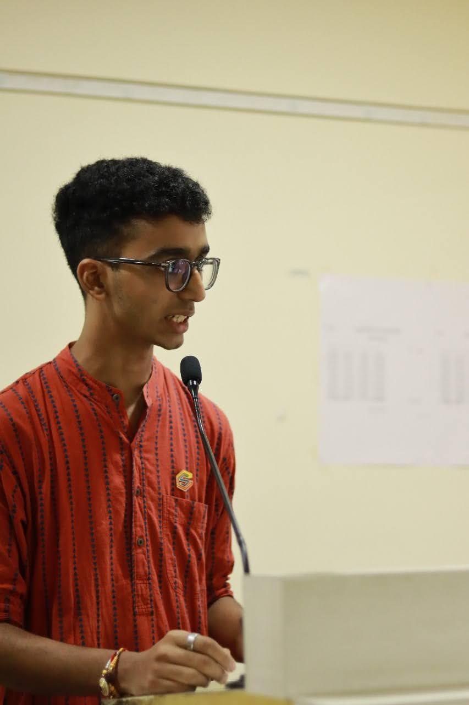

Prabhanshu Dwivedi

Summary
I am currently pursuing BE in Mechanical Engineering at FRCRCE, Mumbai.
I am very focused on solving problems with maximum accuracy with the available resources.
I have experience in technical projects as well as management based tasks.
I am still learning my way through various hurdles and situations to be the best version of myself.
Education
- Bachelor of Engineering - Fr. Conceicao Rodrigues College of Engineering (2023-2027)
- HSC - Vidyalanakr Classes - Integrated Batch (2021-2023)
- CBSE - SSPM's SSRVM (2008-2021)
Work Experience
-
Students' Council - Technical Representative & Webmaster
Fr. Conceicao Rodrigues College of Engineering · Full-time
Apr 2024 - Present · 11 mos
Mumbai, Maharashtra, India · On-site
- Web Development
- Event Management
- Marketing
- Public Relations
-
Section In-Charge
DIPEX Official · Internship
Feb 2024 - Mar 2024 · 2 mos
Navi Mumbai, Maharashtra, India · On-site
- Team Leadership
- Event Management
- Public Relations
Skills
- Leadership: ⭐️⭐️⭐️⭐️⭐️
- Team Management: ⭐️⭐️⭐️⭐️⭐️
- Adaptability: ⭐️⭐️⭐️⭐️
- Public Relations: ⭐️⭐️⭐️⭐️
- Web Development: ⭐️⭐️⭐️
Awards & Certifications
-
National Skating Contender
-
6X time MUN winner
-
National level Yoga and Shloka Chanting Winner
Project Links